Haven’t we all thought about moving to another location during several occasions in our lives? Probably, more than once. May be we got a better job offer in another city or a country. Maybe our country is devasted by wars and ethnic conflicts, and we don’t feel safe in its territory. Maybe our place faced severe climatic conditions, and there remained no means to sustain a life. For one reason or another, humans have been moving across the globe. Our ancestors moved around engaging in business, seeking favorable climatic conditions, waging wars, and building settlements. As a species, humans tend to be a very mobile species.
It has been ages since we started migrating. First migration of modern humans from Africa dates back to 70,000 to 100,000 years ago. Yes, it has been a long time, and we still have not stopped migrating. However, the patterns, drivers, and impacts of migration have changed over time. Even within a given period of time, the reasons behind why people move vary from person to person. We all have personal story behind why we leave the accustomed place and people behind to start anew at an unfamiliar place. In some cases the prospects of an prosperous life at a destination can be more attractive while in other cases the reality at the current residence can be dreadful, both driving migrations among people. While it is impossible to track the personal stories of every migrating individual, because of the collective systems in which we live and behave, it is possible to study and generalize the overall story of how and why we migth be migrating. This blog is an attempt to explore the modern trends in migrations since 2000 till 2022 with respect to economy, socio-political conflicts, and human rights of displaced populations.
Research Questions
Which countries are the top destinations?
Where do the large emigrating populations come from?
Are there any national/ethnic/environmental reasons that explain migration of some populations?
How are migrating populations connected to the economy of their birth countries and the destinations?
Are there any policies that favor human mobility?
Data Description
The datasets that will be used to study the migration dynamics will be obtained from “Organization of Economic Cooperation and Development (OECD)” and “The Global Knowledge Partnership on Migration and Development (KNOMAD)”. The dataset from OECD will contain the migration rate–recorded as the number of individuals migrating from one country to another–across 2000-2022 where as KNOMAD’s datasets contains the information about the remittance of a country. Remittance is the capital received by a country from their native populations working overseas.
The OECD dataset has measures of non-native populations entering (inflows) and leaving(outflows) from top destinations. These measures are based on population registers, residence and/or work permits, and estimation from surveys.
The general view of the the data in OECD dataset is shown in Table 1
Code
import pandas as pdimport numpy as npimport matplotlib.pyplot as pltimport plotly.express as pximport plotly.io as pioflows = pd.read_csv("../data/inflows of foreign population by nationality.csv", low_memory=False)# dropping the total migrants value for belgium for 2010.flows = flows.dropna(subset=['Value'])flows_cleaned = flows.dropna(subset=['Value'])# dropping columns that we don't needflows_cleaned = flows.drop(columns=['Flag Codes', 'Flags'])flows_cleaned.head()
Table 1: Migration Flows
CO2
Country of birth/nationality
VAR
Variable
GEN
Gender
COU
Country
YEA
Year
Value
0
AFG
Afghanistan
B11
Inflows of foreign population by nationality
TOT
Total
AUS
Australia
2000
2000
887.0
1
AFG
Afghanistan
B11
Inflows of foreign population by nationality
TOT
Total
AUS
Australia
2001
2001
456.0
2
AFG
Afghanistan
B11
Inflows of foreign population by nationality
TOT
Total
AUS
Australia
2002
2002
660.0
3
AFG
Afghanistan
B11
Inflows of foreign population by nationality
TOT
Total
AUS
Australia
2003
2003
1015.0
4
AFG
Afghanistan
B11
Inflows of foreign population by nationality
TOT
Total
AUS
Australia
2004
2004
1340.0
Note
The variable column containts two unique labels. Inflows of foreign population by nationality tells the number of people arriving at a country from their birth countries. Outflows of foreign population by nationality tells the number of non-native population leaving for their birth country from a country.
The general overview of the remittance sent out by a country is shown in Table 2.
Note
Remittance, in this context, is defined as the sum of money sent by a person working abroad back to their birth country.
We will use these datasets for the rest of our studies.
Note
Migration can be understood as the movement of people in and out of a country. Moving in of non-native populations and moving out of native population can happen simultaneously in a country.
Emigrating Population
Emigrating population can be defined as the population that is leaving their native country and is moving into a new country. The reasons and motive for such ouflows can be several, inclduing employment opportunities, political conflicts, refugees, and so on. The datasets we are using in this project does not have comprehensive information to study the actual reasons of the migrations, but we will later look into employment opportunities in countries that recieve highest number of emigrants. Other reasons can also be empirically implied based on the conditions at the time of migration in their former countries. For instance, we can expect a bigger number of population leaving a country with ongoing war or political conflcts or a climate disaster. First, let’s see the general trend in emigrating population. The Figure 1 shows the total number of foreign people arriving in a destination (for instance, United States) over time.
Code
inflows_cleaned = flows_cleaned[flows_cleaned['Variable'] =='Inflows of foreign population by nationality']inflows_cleaned = inflows_cleaned[inflows_cleaned['Country of birth/nationality'] !="Total"]fig = px.choropleth( data_frame=inflows_cleaned.groupby(['COU', 'Year', "Country"], as_index=False)['Value'].sum(), locations="COU", animation_frame="Year", animation_group ="COU", color="Value", title="Inflows of Foreign Population", color_continuous_scale="Viridis", projection="equirectangular", labels={"Value": "Migration Value"}, hover_name="Country", template="ggplot2",)fig.show()
Figure 1: Total emigrating population in a given year. The daset is limited to OECD and few other countries.
This figure does not indicate where all these moving population originate from. The figure only shows the total number of immigrants arriving at a destination in a given year. So it would be even more interesting to see where are these populations arrriving from. In Figure 2, for brevity and effective communication of information in a compact graph, we will focus only on the top 20 movements in 2020.
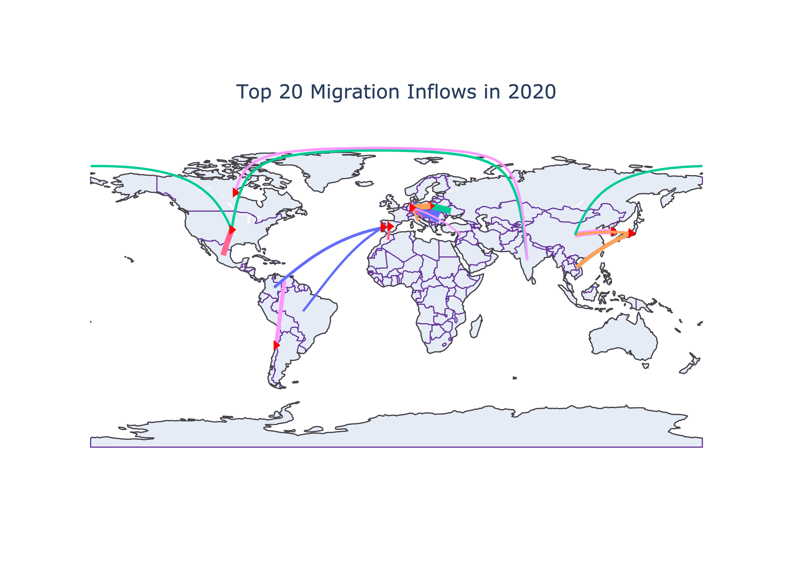
Figure 2: Total Emigrating Population in 2020, both origins and destinations(arrows) indicated
The above figure shows a very interesting trend in Europe. Germany tends to be the favorite destination among many European nations (Bulgaria, Italy, Romania, Crotia, Poland). There is a large movement from Ukrain to Poland as well. Syrian populations from west Asia also migrate to Germany in the above graph. The migration from Syria might be the cause of civil unrest within the country while other migrations within the European nations might be due to the open borders among Schengen nations.
While European nations mostly see continental migrations, other destinations seem to have cross-continental migration. People from India are migrating to US and Canada in 2020. Populations from China also migrate into the US. Spain receives population from Morocco and Brazil while Portugal from Colombia. There are contintation migrations in other continents as well (Mexico to USA, Venezuala to Chile, China to Korea and Japan, Viet Nam to Japan), but they are not as consistent as in Europe (see additional figure).
Rather than just focusing in the year 2020, seeing the total inflows over time might be better to see the trend. The aggregate of top 10 moving population is visualized with their origin and destination countries in the Figure 3.
Code
mean_inflows_10 = inflows_cleaned[inflows_cleaned['Year'] <=2020]mean_inflows_10 = mean_inflows_10[mean_inflows_10['CO2'] !='Total']# mean_inflows_10 = inflows_10mean_inflows_10 = mean_inflows_10.groupby(['Country of birth/nationality', 'Country'])['Value'].sum().reset_index(name='Total Migration')# some countries have larget moving populations moving to different locations, so 16 and not 10top_10_mean_inflows = mean_inflows_10.nlargest(16, "Total Migration")# sorting them in descending ordersorted_top_10_mean_inflows = top_10_mean_inflows.sort_values('Total Migration', ascending=False)fig = px.parallel_categories( data_frame=sorted_top_10_mean_inflows, dimensions=['Country of birth/nationality', 'Country'], color='Total Migration', color_continuous_scale=px.colors.sequential.Viridis, labels={'Country of birth/nationality': 'Birth Country','Country': 'Destination Country' })fig.update_layout( title="Top 10 Population Leaving their Birth Country in 2000-2020", title_x=0.5, coloraxis_colorbar=dict(x=1.1), margin=dict(l=100, t =80) # adjust margins on the left and top)fig.show()
Figure 3: Top Mean Inflows of Population in 2000-2020.
As the figure suggests, Germany and US are the top destinations for many migrating populations. As was seen in 2020, the top moving populations are very similar on average in 2000-2022 time period. So it can be assumed the dynamics between these countries will continue in the future as well, disregarding any unprecendented events like wars or changes in policies.
At this point, after exploring the top emigrating populations and destinations, we might assume that the total migration into these destination have increased over time. So it might a good idea to test our intuitive assumption about the change in emigrating population overtime in top destionations. The change in total inflows is depicted for United States, Korea, Japan, Germany, Italy, and Canada in Figure 4.
As shown in figure Figure 4, there is no stark differences in total inflows over time among these countries expect in Germany. During 2015, there is a large inflows of foreign population compared to the previous years. According to a research, this was attributed to European refugee crisis “when the flow of migrants increased dramatically from 153,000 in 2008 to more than 1 million in 2015. This was mainly due to the growing number of Syrians, Iraqis, Libyans, Afghans and Eritreans fleeing war, ethnic conflict or economic hardship”. [1] https://doi.org/10.1371%2Fjournal.pone.0284390
Naturalization
When we talk about the emigrating populations, naturalization is also part of a conversation. Naturalization is a process by wich a non-national citizen acquires the nationality of a certain country. The tendency to seek nationality in a country can have personal motives but it also can be reflective of the conditions in migrants’ birth countries. For instance, migrants fleeing wars, ethnic discrimination, and climate disasters will likely seek permanent settlements in their new destinations. There are two players in this dynamics: the country granting citizenship and the country to which migrants belong to. The Figure 5 shows the top five countries granting nationality over time. We have line graphs for eight countries, which means that five of these eight countries are the top five grantees of nationality in any given year from 2000-2022.
Code
data = pd.read_csv("../data/inflows of foreign population by nationality.csv", low_memory=False)nationality_acquisition = data[data['Variable'] =="Acquisition of nationality by country of former nationality"]nationality_acquisition_mean = nationality_acquisition.groupby(['YEA', 'Country'])['Value'].sum().groupby('YEA', group_keys=False).nlargest(5).reset_index()fig = px.line(nationality_acquisition_mean, x='YEA', y='Value', color='Country', title='Total Naturalization of Foreign Poupulations')fig.update_layout( legend_title_text='Country Granting Citizenship', legend_title_font=dict(size=12), plot_bgcolor ='white', title_x =0.5)fig.update_xaxes(title_text='Year')fig.update_yaxes(title_text='Total Acquisition of Nationality')fig.show()
Figure 5: Top countries granting citizenships to non-native populations.
It can be seen in the figure that there are no drastic changes in the trend of naturalization among non-native populations except in US. For instance, in 2003, the total numbers of naturalization falls compared to 2002. Similarly, the rate increase from 2007 to 2008 and decreases from 2008-2010. Rather than just highlighting the trend of naturalization over time, it also begs attention to see which population are seeking naturalization in a given year. Due to constraints in space and time, this blog only explores it for a single year. The Figure 6 studies this for the year 2021.
Code
nationality_acquisition_2021 = nationality_acquisition[(nationality_acquisition['YEA'] ==2021) & (nationality_acquisition['CO2'] !="TOT")]top_10_acquisition = nationality_acquisition_2021.nlargest(10, columns ="Value")fig = px.bar(top_10_acquisition, x='Country', y='Value', color='Country of birth/nationality', title='Acquisition of Nationality by Foreign Population in 2021')fig.show()
Figure 6: Top non-native populations seeking citizenships.
Figure 6 shows the top 10 non-native populations seeking nationality in different destinations. Multiple nationalites including India, China, Mexico, Phillipines, Cuba, and Dominican Republic seek naturalization in US. Other countries do not have multiple, large non-native populations seeking nationality. Syrian migrants were on of the top 10 populations acquiring nationality, and they were naturalized in Netherlands and Sweden. Moroccan migrants were naturalized in Spain and large number of Indian migrants also gained nationaloty in Australia in 2021. The data collected for 2021 might be incomplete or even unrepresentative of the general phenomenon due to the COVID-19 pandemic.
Returning Population
While some migrants tend to stay permanently at their destinations, some tend to return to their birth countries. Figure 7 shows the amount of non-native population returning to their birth countries.
Code
outflows_cleaned = flows_cleaned[flows_cleaned['Variable'] =='Outflows of foreign population by nationality']outflows_cleaned = outflows_cleaned[outflows_cleaned['Country of birth/nationality'] !="Total"]fig = px.choropleth( data_frame=outflows_cleaned.groupby(['Country of birth/nationality', 'CO2', 'Year'], as_index=False)['Value'].sum(), locations="CO2", animation_frame="Year", animation_group="CO2", color="Value", title="Return of Native Population", color_continuous_scale="Viridis", projection="natural earth", labels={"Value": "Total Migration Value"}, hover_name="Country of birth/nationality", template="plotly",)fig.show()
Figure 7: Non-native populations returning from a country.
Even though the Figure 7 shows from which of thier temporary residence migrants are returning, it does not show which countries they are returning to. Figure 8 shows the movement from the temporary residences to birth countries for top moving populations in 2020. Birth countries are indicated with an arrow.
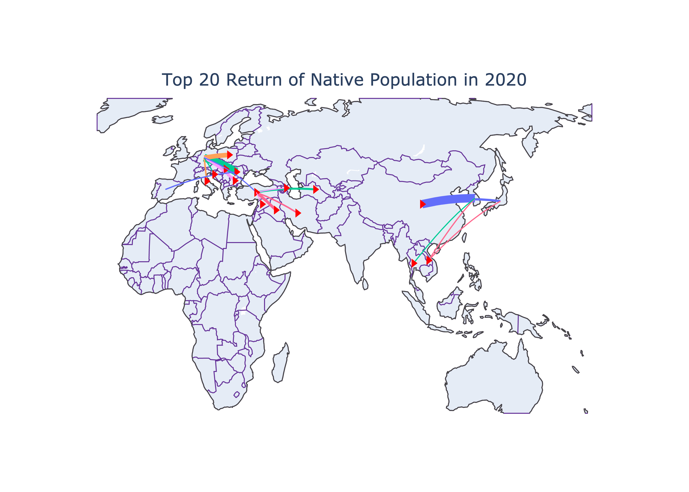
Figure 8: Top populations returning from overseas to their birth nations.
We can deduce for the figure that the within a continental movements see higher return. For instance, in 2020, muliple non-native populations returned to their birth countries in large number. Some of the top returned were also seen within the west Asian countries: Turkey to Iran, Iraq, Azerbaijan, Syria,and Turkemenistan. East Asian countries also had huge returns of native populations: Japan to Viet Nam and Korea; Korea to China, Thailand, and Viet Nam.
The total returns over the period of 2000-2020 is also shown for top countries in Figure 9.
Code
# total from 2000 - 2020outflows_2000_2020 = outflows_cleaned[outflows_cleaned['Year'] <=2020]outflows_2000_2020 = outflows_2000_2020[outflows_2000_2020['CO2'] !='TOT'].sort_values('Value', ascending=False)# total migrationoutflows_2000_2020 = outflows_2000_2020.groupby(['Country of birth/nationality', 'Country'])['Value'].sum().reset_index(name='Total Return')top_10__return = outflows_2000_2020.nlargest(12, "Total Return")
Code
import plotly.graph_objects as godef plot_migration_arc_diagram_mean_inflows(data, top_n=10): filtered_data = data nodes =list(set(filtered_data['Country of birth/nationality']).union(set(filtered_data['Country']))) links = []for _, row in filtered_data.iterrows(): links.append({'source': row['Country'], 'target': row['Country of birth/nationality'], 'value': row['Total Return']}) fig = go.Figure(data=[ go.Sankey( node=dict( pad=15, thickness=20, line=dict(color="black", width=0.5), label=nodes ), link=dict( source=[nodes.index(link['source']) for link in links], target=[nodes.index(link['target']) for link in links], value=[link['value'] for link in links] ) ) ]) fig.update_layout(title=f"Top {top_n} Population Return in 2000-2020", title_x=0.5) # Center the title fig.update_layout( annotations=[dict( x=0.0, y=1.0, xref='paper', yref='paper', text='Temporary Residence', showarrow=False, font=dict( size=16, color='black' ) ),dict( x=1.0, y=1.1, xref='paper', yref='paper', text='Birth Country', showarrow=False, font=dict( size=16, color='black' ) ) ] ) fig.show()plot_migration_arc_diagram_mean_inflows(top_10__return)
Figure 9: Top 10 populations returning to their birth countries
The overall returns also verifies our previous findings that the migrations within a continent tends to have higher return rate. If the return rate is higer, we can also presume that the higher entrance rate might not be a huge burdern for a country recieving migrants in a long term.
Now, we will see the return rate over time for the countries that saw maximum returns in 2000-2020. Figure 10 shows the how the number of native population returning changes for some such countries over the years.
Code
top_countries = ['China', 'Poland', 'Romania', 'Italy', 'India', 'Mexico']outlfows_top_countries = outflows_cleaned[outflows_cleaned['Country of birth/nationality'].isin(top_countries)]# plotting a graphplt.figure(figsize=(8, 5))sns.set(style="whitegrid")sns.lineplot(data=outlfows_top_countries, x="Year", y="Value", hue="Country of birth/nationality", estimator=sum, errorbar =None, marker="o", markersize=8, linewidth=2)plt.title("Total Return of Population", fontsize=16)plt.xlabel("Years", fontsize=14)plt.ylabel("Total Returning Population", fontsize=14)plt.grid(True, linestyle="--", alpha=0.7)plt.xticks(fontsize=12)plt.yticks(fontsize=12)plt.legend(title="Country", title_fontsize='14', loc='upper left')plt.tight_layout()plt.show()
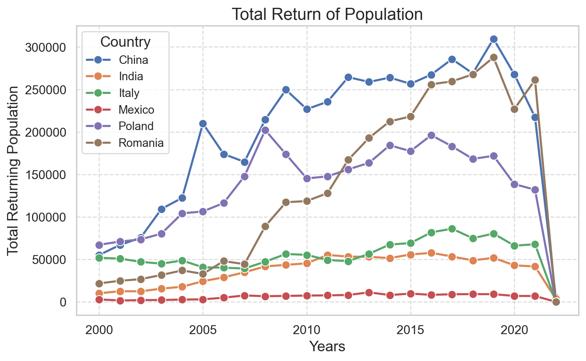
Figure 10: Total return of native populations over time
Some of the countries we studied tend to have increasing return populations (China, Romania, and Poland) while other countries (India, Mexico, and Italy) did not show any significant changes in the number of returning populations.
Warning
The returning pupulation around 2020 falls to 0 for all the countries. This is most likely inconsistency in record keeping during the COVID-19.
Economic Involvements of Migrating Population
Employment Among Non-native Population
One of the reasons that can explain migration is the lack of employment opportunities in the birth countries of migrating populations. So migrating populations seek employment overseas. Without being employed, on the other hand, it might not be possible for an individual to survive in a new economy too. Figure 11 shows the employment rate among non-native population based on their education level.
Figure 11 (a) shows the employment rate is more among highly-educated foreign-born populations compared to moderatly or low-educated poupulations. The ordered employment rate among foreign-born populations based on their education makes sense. Although we don’t have data to explore in this blog, there has been research indicating that the migrating populations on average don’t tend to impact the overall literacy rate of the places in which they are moving. Educated compensates for the uneducated. Next we will explore the employment rate based on gender.
Code
employment_by_place_edu = pd.read_csv("../data/MIG_EMP_EDUCATION_22022024161838929.csv")# dropping not needed columnsemployment_by_place_edu = employment_by_place_edu.drop(columns=employment_by_place_edu.columns[[12, 13, 15, 16]])# dropping some row values that we don't need.unwanted_values = ['Total', 'European Union (27 countries)', 'European Union (28 countries)']employment_by_place_edu = employment_by_place_edu[~employment_by_place_edu['Educational attainment'].isin(unwanted_values)]employment_by_place_edu = employment_by_place_edu.sort_values(by='Value', ascending=False)# plotting figures # by educational attainmentemployment_by_year = employment_by_place_edu[employment_by_place_edu['BIRTH'] !="NB"].groupby(['Year', 'Educational attainment'])['Value'].mean().reset_index()plt.figure(figsize=(6, 5))high_employment_rate = employment_by_year[employment_by_year['Educational attainment'] =="High"]medium_employment_rate = employment_by_year[employment_by_year['Educational attainment'] =="Medium"]low_employment_rate = employment_by_year[employment_by_year['Educational attainment'] =="Low"]plt.plot(high_employment_rate['Year'], high_employment_rate['Value'], marker='o', label='Highly Educated')plt.plot(medium_employment_rate['Year'], medium_employment_rate['Value'], marker='o', label='Moderately Educated')plt.plot(low_employment_rate['Year'], low_employment_rate['Value'], marker='o', label='Low Educated')plt.ylim(0) plt.title('Foreign Born Employment Rates by Educational Attainment in OECD COuntries')plt.xlabel('Year')plt.ylabel('Employment Rate')plt.grid(True)plt.legend()plt.show()# by genderemployment_by_gender_birth = pd.read_csv("../data/employment_birth_sex.csv")employment_by_gender_birth['Country'] = employment_by_gender_birth['Country'].str.strip()# just filtering OECD ratesOECD_total = employment_by_gender_birth[employment_by_gender_birth['Country'] !="OECD - Total"]#plotting the emp rateplt.figure(figsize=(6, 5))male_employment_rate = OECD_total[(OECD_total['RATE'] =="N_RATE") & (OECD_total['Gender'] =='Men') & (OECD_total['BIRTH'] =='FB')]male_employment_rate = male_employment_rate.groupby('Year')['Value'].mean()plt.plot(male_employment_rate.index, male_employment_rate.values, marker='o', label='Male Employment Rate')female_employment_rate = OECD_total[(OECD_total['RATE'] =="N_RATE") & (OECD_total['Gender'] =='Women') & (OECD_total['BIRTH'] =='FB')]female_employment_rate = female_employment_rate.groupby('Year')['Value'].mean()plt.plot(female_employment_rate.index, female_employment_rate.values, marker='o', label='Female Employment Rate')plt.ylim(0) plt.title('Foreign Born Male and Female Employment Rates In OECD Countries')plt.xlabel('Year')plt.ylabel('Employment Rate')plt.grid(True)plt.legend()plt.show()
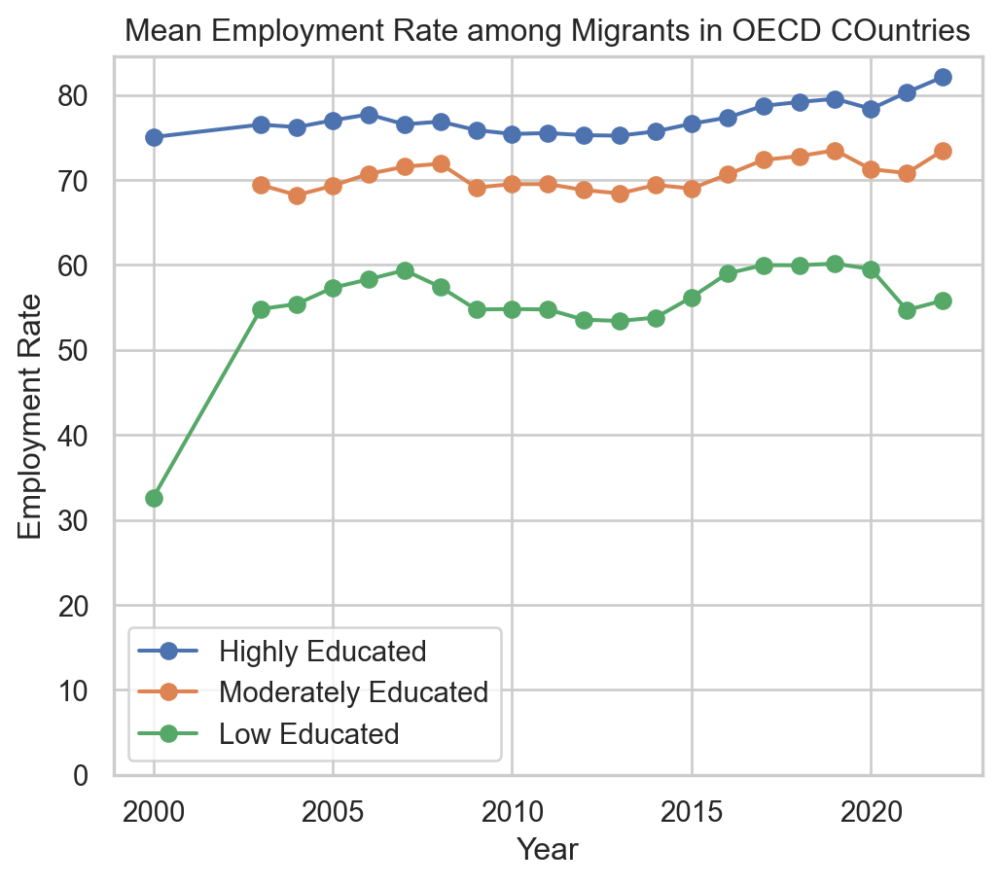
(a) by Education
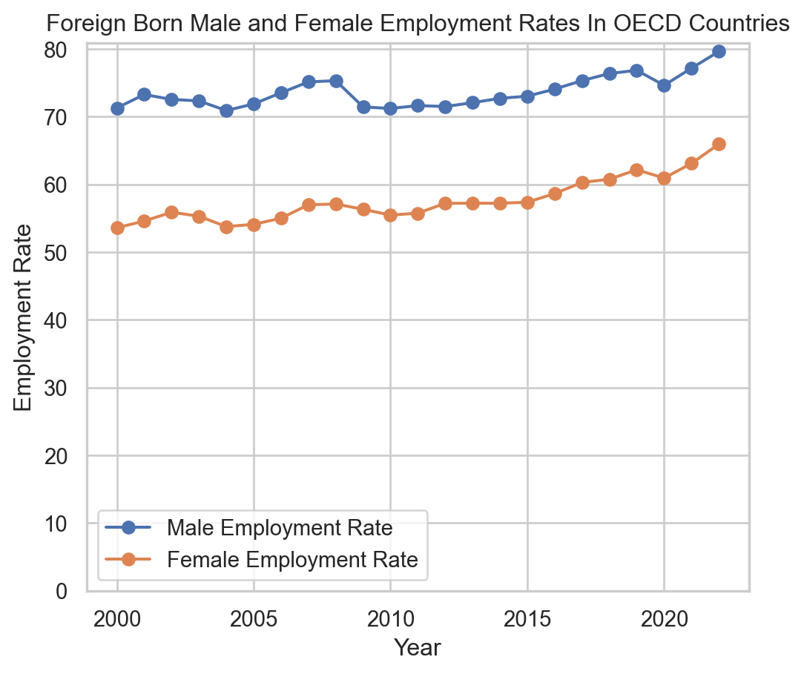
(b) by Gender
Figure 11: Total Employment Rate among Foreign-born Populations Over Time
Figure 11 (b) shows that the employment rate is more among male populations than the female counterparts. Some argues that employers prey on migrants and use them as low-wage workers while others argue that the migrants tolerate toxic behaviors in workplaces, decreasing the overall moral standards in the work environments. I will say why not to point out the overall ecnomic , both rewards and punishments, of locations in question that allow such tendencies. Such issues are the serious violations of human rights and morality and has to be further investigated.
Remittance
One of the often overlooked characteristics of migration is remittance. Remittance, as mentioned earlier, is defined as the sum of money sent by a person working abroad back to their birth country.
The (fig?) shows the top 10 nations recieving money from their citizens working abroad. This is consistend with emigrating population as well. India, Mexico, and China were top moving populations during 2000-2020.
Code
# remittance inward flowremit_inward = pd.read_excel("../data/inward_remittance_flows_december_2023_1.xlsx")#calculate mean remittanceremit_inward['Mean Remittance'] = remit_inward.iloc[:, 1:-1].mean(axis=1)# exclude groups of nations to focus on individual countriesremit_inward = remit_inward[(remit_inward['Remittance inflows (US$ million)'] !='World') & (remit_inward['Remittance inflows (US$ million)'] !='Low-and Middle-Income Countries')]# included only top 10top_10_remit_inward = remit_inward.nlargest(10, 'Mean Remittance')top_10_remit_inward_sorted = top_10_remit_inward.sort_values(by='Mean Remittance', ascending=False)# plot the figureplt.figure(figsize=(8, 6)) # Adjusted figure sizecountries = top_10_remit_inward_sorted['Remittance inflows (US$ million)']mean_remittance = top_10_remit_inward_sorted['Mean Remittance']# Define the position of bars on y-axisy_pos =range(len(countries))# Define the width of each bar based on 'Mean Remittance'bar_width = mean_remittance *0.01# Adjust multiplier for appropriate widthplt.barh(y_pos, mean_remittance, color='skyblue', height=0.8, edgecolor='black', linewidth=1, alpha=0.8)plt.yticks(y_pos, countries, fontsize=8)plt.xlabel('Mean Remittance (US$ Million)', fontsize=8) #plt.ylabel('Countries Receiving Remittance', fontsize=8)plt.title('Top 10 Mean Remittance Inflows', fontsize=10)plt.xlim(0, mean_remittance.max() *1.1)plt.ylim(-0.5, len(countries) -0.5)plt.gca().invert_yaxis()plt.tight_layout()plt.savefig("../results/top_10_remittance_inflows_bar_variable_width_small.png", dpi=300)plt.show()
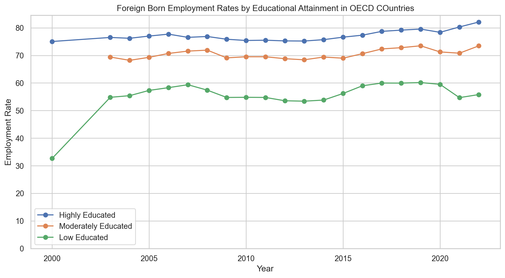
There might be countries which are much more dependent on the remittance as shown in (fig?)-
Code
top_10_gdp = remit_inward.nlargest(20, "% of GDP in 2023")fig, ax = plt.subplots(figsize=(18, 8))top_10_gdp_sorted = top_10_gdp.sort_values('% of GDP in 2023', ascending=True)top_10_gdp_sorted.plot(y='% of GDP in 2023', x='Remittance inflows (US$ million)', kind='barh', ax=ax, color='teal', legend=False)ax.set_xlabel('% of GDP Remittance Contributed in 2023')ax.set_ylabel('Countries')ax.set_title('Remittance Inflows as Percentage of GDP in 2023')ax.set_yticklabels(top_10_gdp_sorted['Remittance inflows (US$ million)'])plt.savefig("../results/Top 10 Countries by Remittance Inflows as % of their GDP in 2023.png")plt.show()
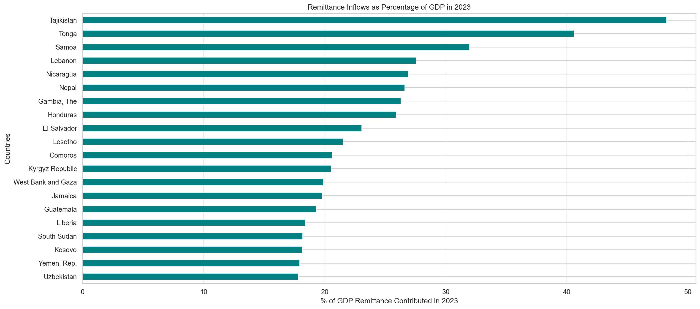
Sentiments
For the sentimental analysis, texts were extracted from PDF files. The NTLK library tokenizes the text, and uses the NRC Emotion Lexicon to identify and count the emotions associated with the words in the text. The sentiment scores across multiple PDFs were aggregated, collects words associated with each sentiment, and visualized the overall sentiment distribution in the Figure 12
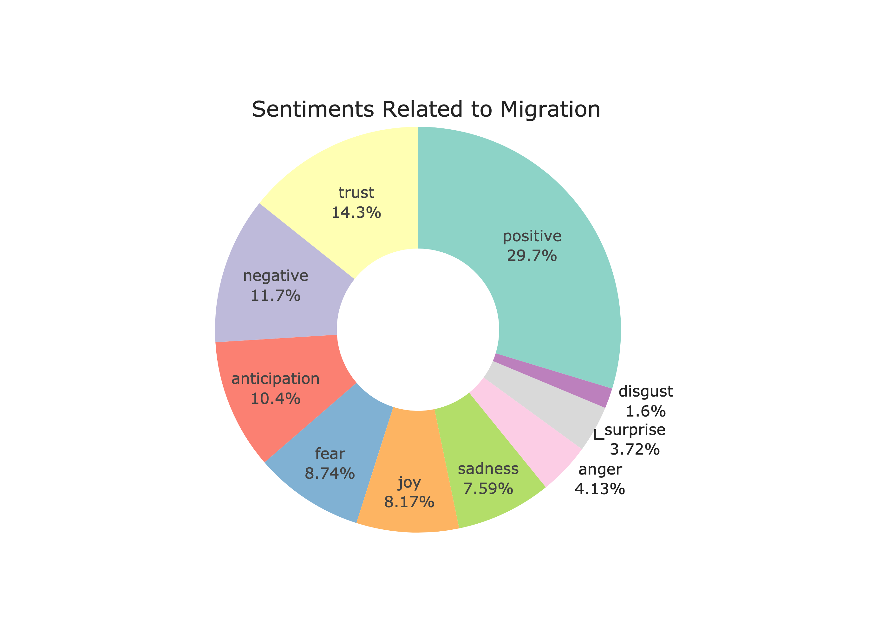
Figure 12: Sentiment Analysis
?@fig-cloud 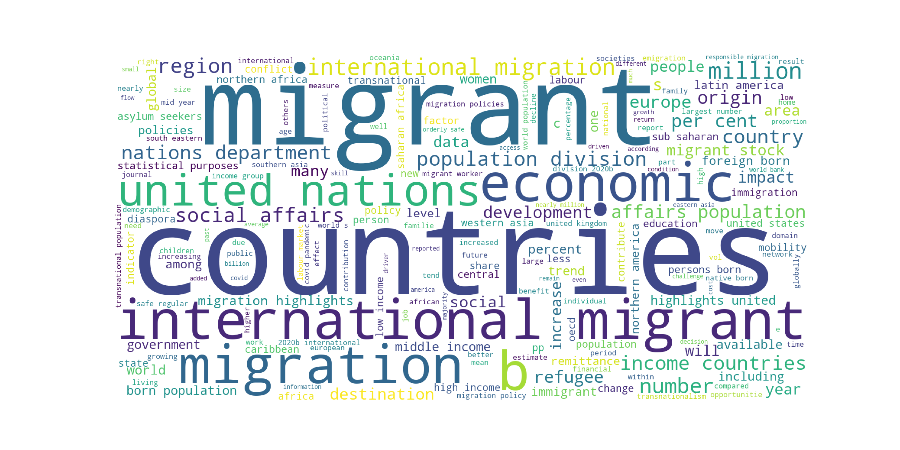
Differences in Migrations across years and Countries
Code
df = inflows_cleaned[['Country of birth/nationality', 'Country', 'Year', 'Value']]# k means clusteringfrom sklearn.cluster import KMeansfrom sklearn.preprocessing import StandardScaler# specifying the number of clusters (k)k =4# Fit K-means clustering algorithmkmeans = KMeans(n_clusters=k)kmeans.fit(df[['Value']])# Add cluster labels to the DataFramedf['cluster_label'] = kmeans.labels_ # Visualize the clustersplt.figure(figsize=(10, 6))# Plot data pointsplt.scatter(df['Value'], [0]*len(df), c=df['cluster_label'], cmap='viridis', alpha=0.5, marker='.')# Plot centroidscentroids = kmeans.cluster_centers_plt.scatter(centroids, [0]*k, marker='x', s=100, color='red')plt.title('K-means Clustering of Countries based on Outflowing Population')plt.xlabel('Normalized Outflowing Population')plt.yticks([]) # Remove y-axis ticksplt.show()
/var/folders/pq/qfw7ttdx6js3zt8l7f7hpvtm0000gn/T/ipykernel_84126/3735614685.py:16: SettingWithCopyWarning:
A value is trying to be set on a copy of a slice from a DataFrame.
Try using .loc[row_indexer,col_indexer] = value instead
See the caveats in the documentation: https://pandas.pydata.org/pandas-docs/stable/user_guide/indexing.html#returning-a-view-versus-a-copy
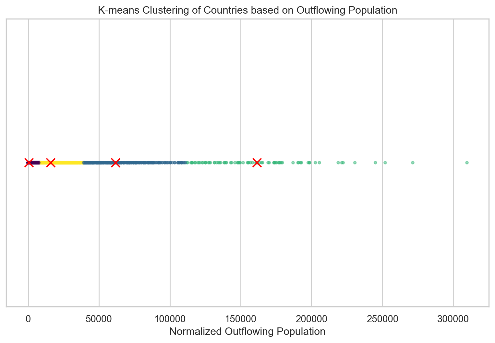
Code
plt.figure(figsize=(10, 8))scatter = plt.scatter(df['Value'], df['Year'], c=df['cluster_label'])unique_labels = np.unique(df['cluster_label'])# colormap used in the scatter plotcmap = plt.colormaps.get_cmap(scatter.get_cmap())cluster_colors = {}# Extract colors for each cluster labelfor label in unique_labels: cluster_colors[label] = cmap(label / (len(unique_labels) -1))for label, color in cluster_colors.items(): plt.scatter([], [], color=color, label=f'Cluster {label}')plt.legend(loc='upper right', scatterpoints=1, title='Clusters')plt.xlabel('Value')plt.ylabel('Year')plt.title('K-means Clusters of Countries')plt.show()
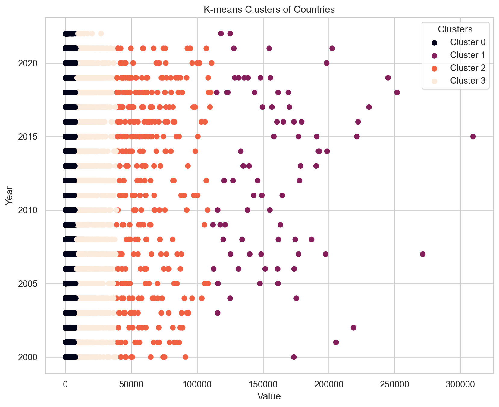
Code
plt.figure(figsize=(10, 20))scatter = plt.scatter(df['Value'], df['Country'], c=df['cluster_label'])unique_labels = np.unique(df['cluster_label'])# colormap used in the scatter plotcmap = plt.colormaps.get_cmap(scatter.get_cmap())cluster_colors = {}# Extract colors for each cluster labelfor label in unique_labels: cluster_colors[label] = cmap(label / (len(unique_labels) -1))for label, color in cluster_colors.items(): plt.scatter([], [], color=color, label=f'Cluster {label}')plt.legend(loc='upper right', scatterpoints=1, title='Clusters')plt.xlabel('Value')plt.ylabel('Country')plt.title('K-means Clusters of Countries')plt.show()
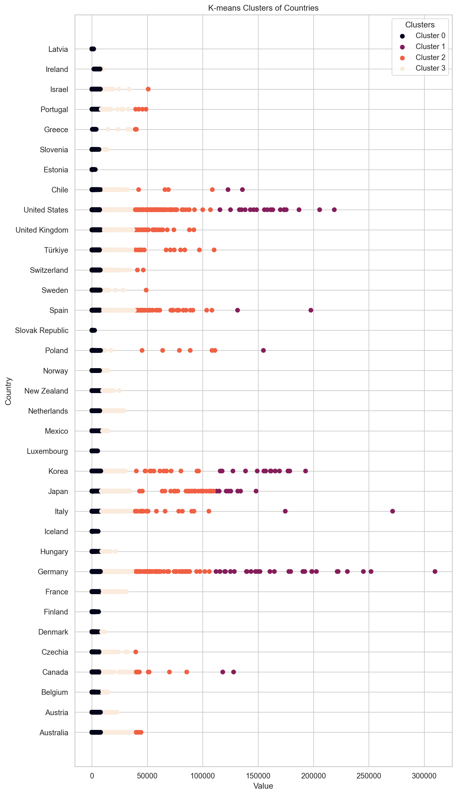
Schengen vs Non-Schengen: An Analysis of differing philosophies in human mobility
Code
flows = pd.read_csv("../data/inflows of foreign population by nationality.csv", low_memory=False)flows = flows.dropna(subset=['Value'])flows_cleaned = flows.dropna(subset=['Value'])# dropping columns that we don't needflows_cleaned = flows.drop(columns=['Flag Codes', 'Flags'])flows_cleaned = flows_cleaned[flows_cleaned['Country of birth/nationality'] =="Total"]flows_cleaned = flows_cleaned[(flows_cleaned['Variable'] =='Inflows of foreign population by nationality') | (flows_cleaned['Variable'] =='Outflows of foreign population by nationality')]flows_cleaned = flows_cleaned[['Country', 'Year', 'Variable', 'Value']]# selecting only few countries in both groupsschengen_countries = ['Germany', 'France', 'Greece', 'Spain', 'Italy']non_schengen = ['Australia', 'Canada', 'Japan', 'New Zealand', 'United States']schengen_non = flows_cleaned[flows_cleaned['Country'].isin(schengen_countries + non_schengen)]# functon to add a columndef is_schengen(country):if country in schengen_countries:return'Schengen'else:return'Non_Schengen'
Code
schengen_non['Schengen'] = schengen_non['Country'].apply(is_schengen)# Filter the DataFrame to include only the rows where the variable is 'Inflows of foreign population by nationality'inflows_df = schengen_non[schengen_non['Variable'] =='Inflows of foreign population by nationality']outflows_df = schengen_non[schengen_non['Variable'] =='Outflows of foreign population by nationality']# Group the data by the 'Schengen' column and calculate the total migration flow for each groupmigration_comparison = inflows_df.groupby('Schengen')['Value'].sum()
/var/folders/pq/qfw7ttdx6js3zt8l7f7hpvtm0000gn/T/ipykernel_84126/3211612920.py:1: SettingWithCopyWarning:
A value is trying to be set on a copy of a slice from a DataFrame.
Try using .loc[row_indexer,col_indexer] = value instead
See the caveats in the documentation: https://pandas.pydata.org/pandas-docs/stable/user_guide/indexing.html#returning-a-view-versus-a-copy
Code
# emigrating populationfig, ax = plt.subplots(figsize=(10, 6))colors = ['b'if s =='Schengen'else'r'for s in inflows_df['Schengen']]# Create separate scatter plots for each colorschengen = ax.scatter(inflows_df.loc[inflows_df['Schengen'] =='Schengen', 'Year'], inflows_df.loc[inflows_df['Schengen'] =='Schengen', 'Value'], c='b', alpha=0.5, label='Schengen')non_schengen = ax.scatter(inflows_df.loc[inflows_df['Schengen'] =='Non_Schengen', 'Year'], inflows_df.loc[inflows_df['Schengen'] =='Non_Schengen', 'Value'], c='r', alpha=0.5, label='Non Schengen')# Add legendax.legend(handles=[schengen, non_schengen])ax.set_xlabel('Year')ax.set_ylabel('Value')ax.set_title('Inflows of foreign population')plt.show()
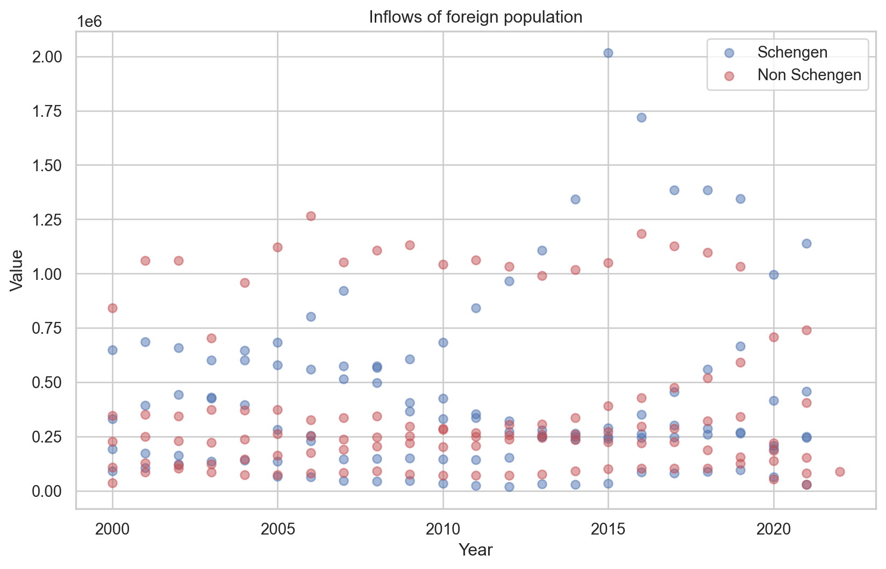
Code
# foreign_population leavingfig, ax = plt.subplots(figsize=(10, 6))colors = ['b'if s =='Schengen'else'r'for s in outflows_df['Schengen']]# Create separate scatter plots for each colorschengen = ax.scatter(outflows_df.loc[outflows_df['Schengen'] =='Schengen', 'Year'], outflows_df.loc[outflows_df['Schengen'] =='Schengen', 'Value'], c='b', alpha=0.5, label='Schengen')non_schengen = ax.scatter(outflows_df.loc[outflows_df['Schengen'] =='Non_Schengen', 'Year'], outflows_df.loc[outflows_df['Schengen'] =='Non_Schengen', 'Value'], c='r', alpha=0.5, label='Non Schengen')# Add legendax.legend(handles=[schengen, non_schengen])ax.set_xlabel('Year')ax.set_ylabel('Value')ax.set_title('Outflows of foreign population')plt.show()
Limitations and Conclusions
Data collected during/after the COVID years is not complete. Data on undocumented migrations was not studied for this research.
Additional Figures
Figure 13: Flows
Here’s an example of citing a source (see Phillips 1999, 33–35). Be sure the source information is entered in “BibTeX” form in the references.bib file.
The bibliography will automatically get generated. Any sources you cite in the document will be included. Other entries in the .bib file will not be included.
References
Phillips, T. P. 1999. “Possible Influence of the Magnetosphere on American History.”J. Oddball Res. 98: 1000–1003.
Source Code
---title: "Where Are We Going? Tracing the Ever-Evolving Tale of Human Migration"subtitle: "Nischal Bhandari"bibliography: references.bibnumber-sections: falseformat: html: theme: default rendering: embed-resources code-fold: true code-tools: true toc: true pdf: defaultjupyter: python3---{fig-alt="Villagers on dried river bed in Satkhira, Bangladesh." width="100%"}Haven't we all thought about moving to another location during several occasions in our lives? Probably, more than once. May be we got a better job offer in another city or a country. Maybe our country is devasted by wars and ethnic conflicts, and we don't feel safe in its territory. Maybe our place faced severe climatic conditions, and there remained no means to sustain a life. For one reason or another, humans have been moving across the globe. Our ancestors moved around engaging in business, seeking favorable climatic conditions, waging wars, and building settlements. As a species, humans tend to be a very mobile species.It has been ages since we started migrating. First migration of modern humans from Africa dates back to 70,000 to 100,000 years ago. Yes, it has been a long time, and we still have not stopped migrating. However, the patterns, drivers, and impacts of migration have changed over time. Even within a given period of time, the reasons behind why people move vary from person to person. We all have personal story behind why we leave the accustomed place and people behind to start anew at an unfamiliar place. In some cases the prospects of an prosperous life at a destination can be more attractive while in other cases the reality at the current residence can be dreadful, both driving migrations among people. While it is impossible to track the personal stories of every migrating individual, because of the collective systems in which we live and behave, it is possible to study and generalize the overall story of how and why we migth be migrating. This blog is an attempt to explore the modern trends in migrations since 2000 till 2022 with respect to economy, socio-political conflicts, and human rights of displaced populations.::: {.callout-note icon=false}## Research Questions* Which countries are the top destinations? * Where do the large emigrating populations come from? * Are there any national/ethnic/environmental reasons that explain migration of some populations? * How are migrating populations connected to the economy of their birth countries and the destinations? * Are there any policies that favor human mobility? :::# Data DescriptionThe datasets that will be used to study the migration dynamics will be obtained from "Organization of Economic Cooperation and Development (OECD)" and "The Global Knowledge Partnership on Migration and Development (KNOMAD)".The [dataset](https://stats.oecd.org/Index.aspx?DataSetCode=MIG) from OECD will contain the migration rate--recorded as the number of individuals migrating from one country to another--across 2000-2022 where as [KNOMAD's datasets](https://www.knomad.org/data/remittances) contains the information about the remittance of a country. Remittance is the capital received by a country from their native populations working overseas.The OECD dataset has measures of non-native populations entering (inflows) and leaving(outflows) from top destinations. These measures are based on population registers, residence and/or work permits, and estimation from surveys.The general view of the the data in OECD dataset is shown in @tbl-migration```{python}#| label: tbl-migration#| tbl-cap: "Migration Flows"import pandas as pdimport numpy as npimport matplotlib.pyplot as pltimport plotly.express as pximport plotly.io as pioflows = pd.read_csv("../data/inflows of foreign population by nationality.csv", low_memory=False)# dropping the total migrants value for belgium for 2010.flows = flows.dropna(subset=['Value'])flows_cleaned = flows.dropna(subset=['Value'])# dropping columns that we don't needflows_cleaned = flows.drop(columns=['Flag Codes', 'Flags'])flows_cleaned.head()```:::{.callout-note}The `variable` column containts two unique labels. `Inflows of foreign population by nationality` tells the number of people arriving at a `country` from their birth countries. `Outflows of foreign population by nationality` tells the number of non-native population leaving for their birth country from a `country`.:::The general overview of the remittance sent out by a country is shown in @tbl-remittance.::: {.callout-note}Remittance, in this context, is defined as the sum of money sent by a person working abroad back to their birth country. :::```{python}#| label: tbl-remittance#| tbl-cap: "Remittance Flows"import pandas as pdremitance = pd.read_excel("../data/outward-remittance-flows-brief-39-december-2023-revised-as-of-mar.8-2024_1.xlsx", header =1, index_col=None)remitance = remitance.dropna()remitance.head()```Another dataset on remittance is for the remittance received by a country which is shown in @tbl-remittance_in```{python}#| label: tbl-remittance_in#| tbl-cap: "Remittance Inflows"remit_inward = pd.read_excel("../data/inward_remittance_flows_december_2023_1.xlsx")remit_inward = remit_inward.dropna()remit_inward.head()```We will use these datasets for the rest of our studies.:::{.callout-note}Migration can be understood as the movement of people in and out of a country. Moving in of non-native populations and moving out of native population can happen simultaneously in a country.:::### Emigrating PopulationEmigrating population can be defined as the population that is leaving their native country and is moving into a new country. The reasons and motive for such ouflows can be several, inclduing employment opportunities, political conflicts, refugees, and so on. The datasets we are using in this project does not have comprehensive information to study the actual reasons of the migrations, but we will later look into employment opportunities in countries that recieve highest number of emigrants. Other reasons can also be empirically implied based on the conditions at the time of migration in their former countries. For instance, we can expect a bigger number of population leaving a country with ongoing war or political conflcts or a climate disaster. First, let's see the general trend in emigrating population. The @fig-inflows shows the total number of foreign people arriving in a destination (for instance, United States) over time. ```{python}#| label: fig-inflows#| fig-cap: "Total emigrating population in a given year. *The daset is limited to OECD and few other countries*."inflows_cleaned = flows_cleaned[flows_cleaned['Variable'] =='Inflows of foreign population by nationality']inflows_cleaned = inflows_cleaned[inflows_cleaned['Country of birth/nationality'] !="Total"]fig = px.choropleth( data_frame=inflows_cleaned.groupby(['COU', 'Year', "Country"], as_index=False)['Value'].sum(), locations="COU", animation_frame="Year", animation_group ="COU", color="Value", title="Inflows of Foreign Population", color_continuous_scale="Viridis", projection="equirectangular", labels={"Value": "Migration Value"}, hover_name="Country", template="ggplot2",)fig.show()```This figure does not indicate where all these moving population originate from. The figure only shows the total number of immigrants arriving at a destination in a given year. So it would be even more interesting to see where are these populations arrriving from. In @fig-2020in, for brevity and effective communication of information in a compact graph, we will focus only on the top 20 movements in 2020. {#fig-2020in}The above figure shows a very interesting trend in Europe. Germany tends to be the favorite destination among many European nations (Bulgaria, Italy, Romania, Crotia, Poland). There is a large movement from Ukrain to Poland as well. Syrian populations from west Asia also migrate to Germany in the above graph. The migration from Syria might be the cause of civil unrest within the country while other migrations within the European nations might be due to the open borders among Schengen nations. While European nations mostly see continental migrations, other destinations seem to have cross-continental migration. People from India are migrating to US and Canada in 2020. Populations from China also migrate into the US. Spain receives population from Morocco and Brazil while Portugal from Colombia. There are contintation migrations in other continents as well (Mexico to USA, Venezuala to Chile, China to Korea and Japan, Viet Nam to Japan), but they are not as consistent as in Europe (see additional figure).Rather than just focusing in the year 2020, seeing the total inflows over time might be better to see the trend. The aggregate of top 10 moving population is visualized with their origin and destination countries in the @fig-topmeans.```{python}#| label: fig-topmeans#| fig-cap: "Top Mean Inflows of Population in 2000-2020."mean_inflows_10 = inflows_cleaned[inflows_cleaned['Year'] <=2020]mean_inflows_10 = mean_inflows_10[mean_inflows_10['CO2'] !='Total']# mean_inflows_10 = inflows_10mean_inflows_10 = mean_inflows_10.groupby(['Country of birth/nationality', 'Country'])['Value'].sum().reset_index(name='Total Migration')# some countries have larget moving populations moving to different locations, so 16 and not 10top_10_mean_inflows = mean_inflows_10.nlargest(16, "Total Migration")# sorting them in descending ordersorted_top_10_mean_inflows = top_10_mean_inflows.sort_values('Total Migration', ascending=False)fig = px.parallel_categories( data_frame=sorted_top_10_mean_inflows, dimensions=['Country of birth/nationality', 'Country'], color='Total Migration', color_continuous_scale=px.colors.sequential.Viridis, labels={'Country of birth/nationality': 'Birth Country','Country': 'Destination Country' })fig.update_layout( title="Top 10 Population Leaving their Birth Country in 2000-2020", title_x=0.5, coloraxis_colorbar=dict(x=1.1), margin=dict(l=100, t =80) # adjust margins on the left and top)fig.show()```As the figure suggests, Germany and US are the top destinations for many migrating populations. As was seen in 2020, the top moving populations are very similar on average in 2000-2022 time period. So it can be assumed the dynamics between these countries will continue in the future as well, disregarding any unprecendented events like wars or changes in policies.At this point, after exploring the top emigrating populations and destinations, we might assume that the total migration into these destination have increased over time. So it might a good idea to test our intuitive assumption about the change in emigrating population overtime in top destionations. The change in total inflows is depicted for United States, Korea, Japan, Germany, Italy, and Canada in @fig-overtime.```{python}#| label: fig-overtime#| fig-cap: " Total Inflows Over Time"top_countries = ["United States", "Korea", "Japan", "Germany", "Italy", "Canada"]inflows_top_countries = inflows_cleaned[inflows_cleaned['Country'].isin(top_countries)]import seaborn as snsimport matplotlib.pyplot as pltplt.figure(figsize=(8, 5))sns.set(style="whitegrid")sns.lineplot(data=inflows_top_countries, x="Year", y="Value", hue="Country", estimator=sum, errorbar=None, marker="o", markersize=8, linewidth=2)plt.title("Total Inflows of Foreign Population", fontsize=16)plt.xlabel("Years", fontsize=14)plt.ylabel("Total Migrants Inflows", fontsize=14)plt.grid(True, linestyle="--", alpha=0.7)plt.xticks(fontsize=12)plt.yticks(fontsize=12)plt.legend(title="Country", title_fontsize='14', loc='upper left')plt.tight_layout()plt.show()```As shown in figure @fig-overtime, there is no stark differences in total inflows over time among these countries expect in Germany. During 2015, there is a large inflows of foreign population compared to the previous years. According to a research, this was attributed to European refugee crisis "when the flow of migrants increased dramatically from 153,000 in 2008 to more than 1 million in 2015. This was mainly due to the growing number of Syrians, Iraqis, Libyans, Afghans and Eritreans fleeing war, ethnic conflict or economic hardship". [1] https://doi.org/10.1371%2Fjournal.pone.0284390 #### NaturalizationWhen we talk about the emigrating populations, naturalization is also part of a conversation. Naturalization is a process by wich a non-national citizen acquires the nationality of a certain country. The tendency to seek nationality in a country can have personal motives but it also can be reflective of the conditions in migrants' birth countries. For instance, migrants fleeing wars, ethnic discrimination, and climate disasters will likely seek permanent settlements in their new destinations. There are two players in this dynamics: the country granting citizenship and the country to which migrants belong to. The @fig-granting shows the top five countries granting nationality over time. We have line graphs for eight countries, which means that five of these eight countries are the top five grantees of nationality in any given year from 2000-2022.```{python}#| label: fig-granting#| fig-cap: " Top countries granting citizenships to non-native populations."data = pd.read_csv("../data/inflows of foreign population by nationality.csv", low_memory=False)nationality_acquisition = data[data['Variable'] =="Acquisition of nationality by country of former nationality"]nationality_acquisition_mean = nationality_acquisition.groupby(['YEA', 'Country'])['Value'].sum().groupby('YEA', group_keys=False).nlargest(5).reset_index()fig = px.line(nationality_acquisition_mean, x='YEA', y='Value', color='Country', title='Total Naturalization of Foreign Poupulations')fig.update_layout( legend_title_text='Country Granting Citizenship', legend_title_font=dict(size=12), plot_bgcolor ='white', title_x =0.5)fig.update_xaxes(title_text='Year')fig.update_yaxes(title_text='Total Acquisition of Nationality')fig.show()```It can be seen in the figure that there are no drastic changes in the trend of naturalization among non-native populations except in US. For instance, in 2003, the total numbers of naturalization falls compared to 2002. Similarly, the rate increase from 2007 to 2008 and decreases from 2008-2010. Rather than just highlighting the trend of naturalization over time, it also begs attention to see which population are seeking naturalization in a given year. Due to constraints in space and time, this blog only explores it for a single year. The @fig-seeking studies this for the year 2021.```{python}#| label: fig-seeking#| fig-cap: "Top non-native populations seeking citizenships."nationality_acquisition_2021 = nationality_acquisition[(nationality_acquisition['YEA'] ==2021) & (nationality_acquisition['CO2'] !="TOT")]top_10_acquisition = nationality_acquisition_2021.nlargest(10, columns ="Value")fig = px.bar(top_10_acquisition, x='Country', y='Value', color='Country of birth/nationality', title='Acquisition of Nationality by Foreign Population in 2021')fig.show()```@fig-seeking shows the top 10 non-native populations seeking nationality in different destinations. Multiple nationalites including India, China, Mexico, Phillipines, Cuba, and Dominican Republic seek naturalization in US. Other countries do not have multiple, large non-native populations seeking nationality. Syrian migrants were on of the top 10 populations acquiring nationality, and they were naturalized in Netherlands and Sweden. Moroccan migrants were naturalized in Spain and large number of Indian migrants also gained nationaloty in Australia in 2021. The data collected for 2021 might be incomplete or even unrepresentative of the general phenomenon due to the COVID-19 pandemic. ### Returning PopulationWhile some migrants tend to stay permanently at their destinations, some tend to return to their birth countries. @fig-returning shows the amount of non-native population returning to their birth countries.```{python}#| label: fig-returning#| fig-cap: " Non-native populations returning from a country."#| outflows_cleaned = flows_cleaned[flows_cleaned['Variable'] =='Outflows of foreign population by nationality']outflows_cleaned = outflows_cleaned[outflows_cleaned['Country of birth/nationality'] !="Total"]fig = px.choropleth( data_frame=outflows_cleaned.groupby(['Country of birth/nationality', 'CO2', 'Year'], as_index=False)['Value'].sum(), locations="CO2", animation_frame="Year", animation_group="CO2", color="Value", title="Return of Native Population", color_continuous_scale="Viridis", projection="natural earth", labels={"Value": "Total Migration Value"}, hover_name="Country of birth/nationality", template="plotly",)fig.show()```Even though the @fig-returning shows from which of thier temporary residence migrants are returning, it does not show which countries they are returning to. @fig-return-birth shows the movement from the temporary residences to birth countries for top moving populations in 2020. Birth countries are indicated with an arrow.{#fig-return-birth}We can deduce for the figure that the within a continental movements see higher return. For instance, in 2020, muliple non-native populations returned to their birth countries in large number. Some of the top returned were also seen within the west Asian countries: Turkey to Iran, Iraq, Azerbaijan, Syria,and Turkemenistan. East Asian countries also had huge returns of native populations: Japan to Viet Nam and Korea; Korea to China, Thailand, and Viet Nam.The total returns over the period of 2000-2020 is also shown for top countries in @fig-returns-total.```{python}# total from 2000 - 2020outflows_2000_2020 = outflows_cleaned[outflows_cleaned['Year'] <=2020]outflows_2000_2020 = outflows_2000_2020[outflows_2000_2020['CO2'] !='TOT'].sort_values('Value', ascending=False)# total migrationoutflows_2000_2020 = outflows_2000_2020.groupby(['Country of birth/nationality', 'Country'])['Value'].sum().reset_index(name='Total Return')top_10__return = outflows_2000_2020.nlargest(12, "Total Return")``````{python}#| label: fig-returns-total#| fig-cap: " Top 10 populations returning to their birth countries"import plotly.graph_objects as godef plot_migration_arc_diagram_mean_inflows(data, top_n=10): filtered_data = data nodes =list(set(filtered_data['Country of birth/nationality']).union(set(filtered_data['Country']))) links = []for _, row in filtered_data.iterrows(): links.append({'source': row['Country'], 'target': row['Country of birth/nationality'], 'value': row['Total Return']}) fig = go.Figure(data=[ go.Sankey( node=dict( pad=15, thickness=20, line=dict(color="black", width=0.5), label=nodes ), link=dict( source=[nodes.index(link['source']) for link in links], target=[nodes.index(link['target']) for link in links], value=[link['value'] for link in links] ) ) ]) fig.update_layout(title=f"Top {top_n} Population Return in 2000-2020", title_x=0.5) # Center the title fig.update_layout( annotations=[dict( x=0.0, y=1.0, xref='paper', yref='paper', text='Temporary Residence', showarrow=False, font=dict( size=16, color='black' ) ),dict( x=1.0, y=1.1, xref='paper', yref='paper', text='Birth Country', showarrow=False, font=dict( size=16, color='black' ) ) ] ) fig.show()plot_migration_arc_diagram_mean_inflows(top_10__return)```The overall returns also verifies our previous findings that the migrations within a continent tends to have higher return rate. If the return rate is higer, we can also presume that the higher entrance rate might not be a huge burdern for a country recieving migrants in a long term.Now, we will see the return rate over time for the countries that saw maximum returns in 2000-2020. @fig-select-returns shows the how the number of native population returning changes for some such countries over the years. ```{python}#| label: fig-select-returns#| fig-cap: " Total return of native populations over time"top_countries = ['China', 'Poland', 'Romania', 'Italy', 'India', 'Mexico']outlfows_top_countries = outflows_cleaned[outflows_cleaned['Country of birth/nationality'].isin(top_countries)]# plotting a graphplt.figure(figsize=(8, 5))sns.set(style="whitegrid")sns.lineplot(data=outlfows_top_countries, x="Year", y="Value", hue="Country of birth/nationality", estimator=sum, errorbar =None, marker="o", markersize=8, linewidth=2)plt.title("Total Return of Population", fontsize=16)plt.xlabel("Years", fontsize=14)plt.ylabel("Total Returning Population", fontsize=14)plt.grid(True, linestyle="--", alpha=0.7)plt.xticks(fontsize=12)plt.yticks(fontsize=12)plt.legend(title="Country", title_fontsize='14', loc='upper left')plt.tight_layout()plt.show()```Some of the countries we studied tend to have increasing return populations (China, Romania, and Poland) while other countries (India, Mexico, and Italy) did not show any significant changes in the number of returning populations.::: {.callout-warning}The returning pupulation around 2020 falls to 0 for all the countries. This is most likely inconsistency in record keeping during the COVID-19.:::### Economic Involvements of Migrating Population#### Employment Among Non-native PopulationOne of the reasons that can explain migration is the lack of employment opportunities in the birth countries of migrating populations. So migrating populations seek employment overseas. Without being employed, on the other hand, it might not be possible for an individual to survive in a new economy too. @fig-fbemployment shows the employment rate among non-native population based on their education level.@fig-fbemployment-1 shows the employment rate is more among highly-educated foreign-born populations compared to moderatly or low-educated poupulations. The ordered employment rate among foreign-born populations based on their education makes sense. Although we don't have data to explore in this blog, there has been research indicating that the migrating populations on average don't tend to impact the overall literacy rate of the places in which they are moving. Educated compensates for the uneducated. Next we will explore the employment rate based on gender.```{python}#| label: fig-fbemployment#| fig-cap: "Total Employment Rate among Foreign-born Populations Over Time" #| fig-subcap:#| - "by Education"#| - "by Gender" #| layout-ncol: 2employment_by_place_edu = pd.read_csv("../data/MIG_EMP_EDUCATION_22022024161838929.csv")# dropping not needed columnsemployment_by_place_edu = employment_by_place_edu.drop(columns=employment_by_place_edu.columns[[12, 13, 15, 16]])# dropping some row values that we don't need.unwanted_values = ['Total', 'European Union (27 countries)', 'European Union (28 countries)']employment_by_place_edu = employment_by_place_edu[~employment_by_place_edu['Educational attainment'].isin(unwanted_values)]employment_by_place_edu = employment_by_place_edu.sort_values(by='Value', ascending=False)# plotting figures # by educational attainmentemployment_by_year = employment_by_place_edu[employment_by_place_edu['BIRTH'] !="NB"].groupby(['Year', 'Educational attainment'])['Value'].mean().reset_index()plt.figure(figsize=(6, 5))high_employment_rate = employment_by_year[employment_by_year['Educational attainment'] =="High"]medium_employment_rate = employment_by_year[employment_by_year['Educational attainment'] =="Medium"]low_employment_rate = employment_by_year[employment_by_year['Educational attainment'] =="Low"]plt.plot(high_employment_rate['Year'], high_employment_rate['Value'], marker='o', label='Highly Educated')plt.plot(medium_employment_rate['Year'], medium_employment_rate['Value'], marker='o', label='Moderately Educated')plt.plot(low_employment_rate['Year'], low_employment_rate['Value'], marker='o', label='Low Educated')plt.ylim(0) plt.title('Foreign Born Employment Rates by Educational Attainment in OECD COuntries')plt.xlabel('Year')plt.ylabel('Employment Rate')plt.grid(True)plt.legend()plt.show()# by genderemployment_by_gender_birth = pd.read_csv("../data/employment_birth_sex.csv")employment_by_gender_birth['Country'] = employment_by_gender_birth['Country'].str.strip()# just filtering OECD ratesOECD_total = employment_by_gender_birth[employment_by_gender_birth['Country'] !="OECD - Total"]#plotting the emp rateplt.figure(figsize=(6, 5))male_employment_rate = OECD_total[(OECD_total['RATE'] =="N_RATE") & (OECD_total['Gender'] =='Men') & (OECD_total['BIRTH'] =='FB')]male_employment_rate = male_employment_rate.groupby('Year')['Value'].mean()plt.plot(male_employment_rate.index, male_employment_rate.values, marker='o', label='Male Employment Rate')female_employment_rate = OECD_total[(OECD_total['RATE'] =="N_RATE") & (OECD_total['Gender'] =='Women') & (OECD_total['BIRTH'] =='FB')]female_employment_rate = female_employment_rate.groupby('Year')['Value'].mean()plt.plot(female_employment_rate.index, female_employment_rate.values, marker='o', label='Female Employment Rate')plt.ylim(0) plt.title('Foreign Born Male and Female Employment Rates In OECD Countries')plt.xlabel('Year')plt.ylabel('Employment Rate')plt.grid(True)plt.legend()plt.show()``` @fig-fbemployment-2 shows that the employment rate is more among male populations than the female counterparts. Some argues that employers prey on migrants and use them as low-wage workers while others argue that the migrants tolerate toxic behaviors in workplaces, decreasing the overall moral standards in the work environments. I will say why not to point out the overall ecnomic , both rewards and punishments, of locations in question that allow such tendencies. Such issues are the serious violations of human rights and morality and has to be further investigated.#### RemittanceOne of the often overlooked characteristics of migration is remittance. Remittance, as mentioned earlier, is defined as the sum of money sent by a person working abroad back to their birth country.The @fig shows the top 10 nations recieving money from their citizens working abroad. This is consistend with emigrating population as well. India, Mexico, and China were top moving populations during 2000-2020.```{python}# remittance inward flowremit_inward = pd.read_excel("../data/inward_remittance_flows_december_2023_1.xlsx")#calculate mean remittanceremit_inward['Mean Remittance'] = remit_inward.iloc[:, 1:-1].mean(axis=1)# exclude groups of nations to focus on individual countriesremit_inward = remit_inward[(remit_inward['Remittance inflows (US$ million)'] !='World') & (remit_inward['Remittance inflows (US$ million)'] !='Low-and Middle-Income Countries')]# included only top 10top_10_remit_inward = remit_inward.nlargest(10, 'Mean Remittance')top_10_remit_inward_sorted = top_10_remit_inward.sort_values(by='Mean Remittance', ascending=False)# plot the figureplt.figure(figsize=(8, 6)) # Adjusted figure sizecountries = top_10_remit_inward_sorted['Remittance inflows (US$ million)']mean_remittance = top_10_remit_inward_sorted['Mean Remittance']# Define the position of bars on y-axisy_pos =range(len(countries))# Define the width of each bar based on 'Mean Remittance'bar_width = mean_remittance *0.01# Adjust multiplier for appropriate widthplt.barh(y_pos, mean_remittance, color='skyblue', height=0.8, edgecolor='black', linewidth=1, alpha=0.8)plt.yticks(y_pos, countries, fontsize=8)plt.xlabel('Mean Remittance (US$ Million)', fontsize=8) #plt.ylabel('Countries Receiving Remittance', fontsize=8)plt.title('Top 10 Mean Remittance Inflows', fontsize=10)plt.xlim(0, mean_remittance.max() *1.1)plt.ylim(-0.5, len(countries) -0.5)plt.gca().invert_yaxis()plt.tight_layout()plt.savefig("../results/top_10_remittance_inflows_bar_variable_width_small.png", dpi=300)plt.show()```There might be countries which are much more dependent on the remittance as shown in @fig-```{python}top_10_gdp = remit_inward.nlargest(20, "% of GDP in 2023")fig, ax = plt.subplots(figsize=(18, 8))top_10_gdp_sorted = top_10_gdp.sort_values('% of GDP in 2023', ascending=True)top_10_gdp_sorted.plot(y='% of GDP in 2023', x='Remittance inflows (US$ million)', kind='barh', ax=ax, color='teal', legend=False)ax.set_xlabel('% of GDP Remittance Contributed in 2023')ax.set_ylabel('Countries')ax.set_title('Remittance Inflows as Percentage of GDP in 2023')ax.set_yticklabels(top_10_gdp_sorted['Remittance inflows (US$ million)'])plt.savefig("../results/Top 10 Countries by Remittance Inflows as % of their GDP in 2023.png")plt.show()```### SentimentsFor the sentimental analysis, texts were extracted from PDF files. The NTLK library tokenizes the text, and uses the NRC Emotion Lexicon to identify and count the emotions associated with the words in the text. The sentiment scores across multiple PDFs were aggregated, collects words associated with each sentiment, and visualized the overall sentiment distribution in the @fig-sentiment{#fig-sentiment}@fig-cloud{#fig-cloud}### Differences in Migrations across years and Countries ```{python}df = inflows_cleaned[['Country of birth/nationality', 'Country', 'Year', 'Value']]# k means clusteringfrom sklearn.cluster import KMeansfrom sklearn.preprocessing import StandardScaler# specifying the number of clusters (k)k =4# Fit K-means clustering algorithmkmeans = KMeans(n_clusters=k)kmeans.fit(df[['Value']])# Add cluster labels to the DataFramedf['cluster_label'] = kmeans.labels_ # Visualize the clustersplt.figure(figsize=(10, 6))# Plot data pointsplt.scatter(df['Value'], [0]*len(df), c=df['cluster_label'], cmap='viridis', alpha=0.5, marker='.')# Plot centroidscentroids = kmeans.cluster_centers_plt.scatter(centroids, [0]*k, marker='x', s=100, color='red')plt.title('K-means Clustering of Countries based on Outflowing Population')plt.xlabel('Normalized Outflowing Population')plt.yticks([]) # Remove y-axis ticksplt.show()``````{python}plt.figure(figsize=(10, 8))scatter = plt.scatter(df['Value'], df['Year'], c=df['cluster_label'])unique_labels = np.unique(df['cluster_label'])# colormap used in the scatter plotcmap = plt.colormaps.get_cmap(scatter.get_cmap())cluster_colors = {}# Extract colors for each cluster labelfor label in unique_labels: cluster_colors[label] = cmap(label / (len(unique_labels) -1))for label, color in cluster_colors.items(): plt.scatter([], [], color=color, label=f'Cluster {label}')plt.legend(loc='upper right', scatterpoints=1, title='Clusters')plt.xlabel('Value')plt.ylabel('Year')plt.title('K-means Clusters of Countries')plt.show()``````{python}plt.figure(figsize=(10, 20))scatter = plt.scatter(df['Value'], df['Country'], c=df['cluster_label'])unique_labels = np.unique(df['cluster_label'])# colormap used in the scatter plotcmap = plt.colormaps.get_cmap(scatter.get_cmap())cluster_colors = {}# Extract colors for each cluster labelfor label in unique_labels: cluster_colors[label] = cmap(label / (len(unique_labels) -1))for label, color in cluster_colors.items(): plt.scatter([], [], color=color, label=f'Cluster {label}')plt.legend(loc='upper right', scatterpoints=1, title='Clusters')plt.xlabel('Value')plt.ylabel('Country')plt.title('K-means Clusters of Countries')plt.show()```### Schengen vs Non-Schengen: An Analysis of differing philosophies in human mobility```{python}flows = pd.read_csv("../data/inflows of foreign population by nationality.csv", low_memory=False)flows = flows.dropna(subset=['Value'])flows_cleaned = flows.dropna(subset=['Value'])# dropping columns that we don't needflows_cleaned = flows.drop(columns=['Flag Codes', 'Flags'])flows_cleaned = flows_cleaned[flows_cleaned['Country of birth/nationality'] =="Total"]flows_cleaned = flows_cleaned[(flows_cleaned['Variable'] =='Inflows of foreign population by nationality') | (flows_cleaned['Variable'] =='Outflows of foreign population by nationality')]flows_cleaned = flows_cleaned[['Country', 'Year', 'Variable', 'Value']]# selecting only few countries in both groupsschengen_countries = ['Germany', 'France', 'Greece', 'Spain', 'Italy']non_schengen = ['Australia', 'Canada', 'Japan', 'New Zealand', 'United States']schengen_non = flows_cleaned[flows_cleaned['Country'].isin(schengen_countries + non_schengen)]# functon to add a columndef is_schengen(country):if country in schengen_countries:return'Schengen'else:return'Non_Schengen'``````{python}schengen_non['Schengen'] = schengen_non['Country'].apply(is_schengen)# Filter the DataFrame to include only the rows where the variable is 'Inflows of foreign population by nationality'inflows_df = schengen_non[schengen_non['Variable'] =='Inflows of foreign population by nationality']outflows_df = schengen_non[schengen_non['Variable'] =='Outflows of foreign population by nationality']# Group the data by the 'Schengen' column and calculate the total migration flow for each groupmigration_comparison = inflows_df.groupby('Schengen')['Value'].sum()``````{python}# emigrating populationfig, ax = plt.subplots(figsize=(10, 6))colors = ['b'if s =='Schengen'else'r'for s in inflows_df['Schengen']]# Create separate scatter plots for each colorschengen = ax.scatter(inflows_df.loc[inflows_df['Schengen'] =='Schengen', 'Year'], inflows_df.loc[inflows_df['Schengen'] =='Schengen', 'Value'], c='b', alpha=0.5, label='Schengen')non_schengen = ax.scatter(inflows_df.loc[inflows_df['Schengen'] =='Non_Schengen', 'Year'], inflows_df.loc[inflows_df['Schengen'] =='Non_Schengen', 'Value'], c='r', alpha=0.5, label='Non Schengen')# Add legendax.legend(handles=[schengen, non_schengen])ax.set_xlabel('Year')ax.set_ylabel('Value')ax.set_title('Inflows of foreign population')plt.show()``````{python}# foreign_population leavingfig, ax = plt.subplots(figsize=(10, 6))colors = ['b'if s =='Schengen'else'r'for s in outflows_df['Schengen']]# Create separate scatter plots for each colorschengen = ax.scatter(outflows_df.loc[outflows_df['Schengen'] =='Schengen', 'Year'], outflows_df.loc[outflows_df['Schengen'] =='Schengen', 'Value'], c='b', alpha=0.5, label='Schengen')non_schengen = ax.scatter(outflows_df.loc[outflows_df['Schengen'] =='Non_Schengen', 'Year'], outflows_df.loc[outflows_df['Schengen'] =='Non_Schengen', 'Value'], c='r', alpha=0.5, label='Non Schengen')# Add legendax.legend(handles=[schengen, non_schengen])ax.set_xlabel('Year')ax.set_ylabel('Value')ax.set_title('Outflows of foreign population')plt.show()```# Limitations and ConclusionsData collected during/after the COVID years is not complete. Data on undocumented migrations was not studied for this research.## Additional Figures::: {#fig-flows}<iframe width="560" height="700" src="migration_lines_overtime.html"></iframe>Flows:::Here's an example of citing a source [see @phil99, pp. 33-35]. Be sure the source information is entered in "BibTeX" form in the `references.bib` file.The bibliography will automatically get generated. Any sources you cite in the document will be included. Other entries in the `.bib` file will not be included.